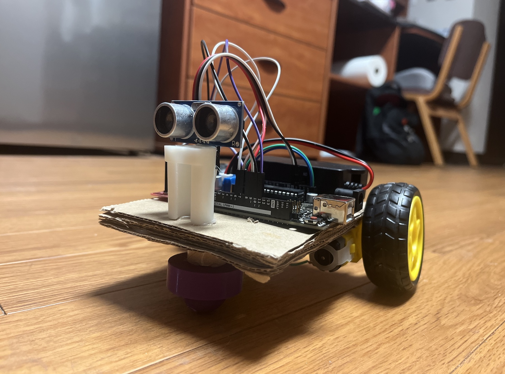

LED Sequencer PCB
A circuit that lights up 10 LEDs one after another in a chase pattern, with a knob to speed it up or slow it down. Built with a 555 timer and CD4017 counter, simulated in LTspice, and laid out as a two-layer PCB in Altium.

Robodog
A little robot that follows you around, keeping a steady distance using ultrasonic sensing and PID-controlled motors. Built with an Arduino Uno, C/C++, and wheel assemblies designed in Onshape.

Reveille: After Hours
A browser-based escape room game where our school mascot, Reveille, gets locked in the library and has to solve her way through a series of stages to get out. Built with JavaScript, HTML/CSS, and Figma.